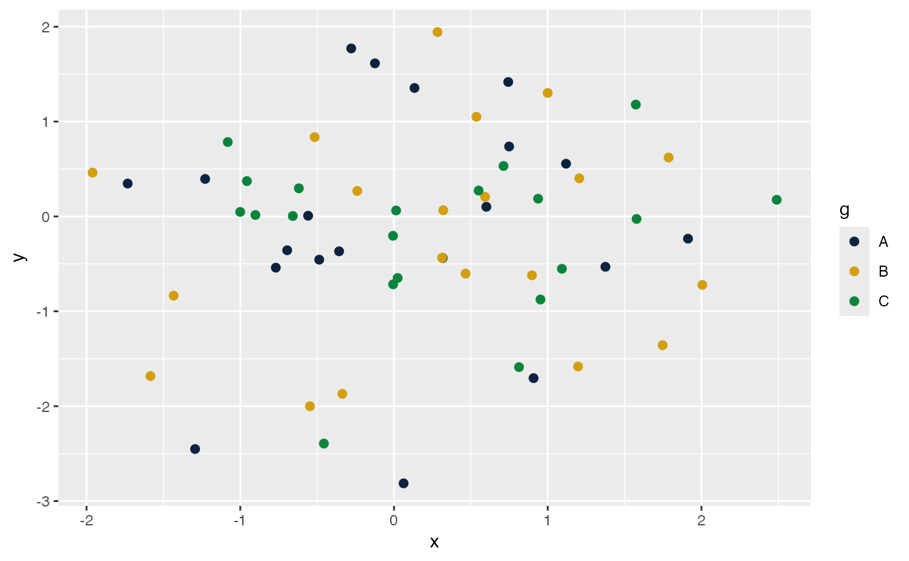

Returns n colors from a named qualitative palette, and supplies
ggplot2 discrete color and fill scales for the Notre Dame palette.
The default palette, "okabe_ito", is base R's Okabe-Ito
colorblind-safe palette, so the DMAR plot_* family is neutral and
accessible by default. The Notre Dame palette is available on request as
"dmar_ND". The palette is exported so the same colors are
available in any ggplot2 or base graphics call.
Usage
dmar_palette(n = NULL, palette = "okabe_ito", reverse = FALSE)
scale_color_dmar_ND(reverse = FALSE, ...)
scale_fill_dmar_ND(reverse = FALSE, ...)
scale_colour_dmar_ND(reverse = FALSE, ...)Arguments
- n
Number of colors to return. A single positive integer. When
NULL(the default), the palette's canonical anchor set is returned: the nine Okabe-Ito colors for"okabe_ito", the ten Tableau colors for"tableau", and the thirteen Notre Dame colors for"dmar_ND".- palette
Character string naming the palette. One of
"okabe_ito"(the default),"tableau", or"dmar_ND". The aliases"ND"and"nd"are accepted for"dmar_ND".- reverse
Logical. If
TRUE, the returned colors (or the scale's color order) are reversed. Defaults toFALSE.- ...
For the
scale_*_dmar_NDfunctions, additional arguments passed todiscrete_scale(for examplename,labels, orguide).
Value
For dmar_palette, a character vector of n
hexadecimal color strings. For the scale_*_dmar_ND functions,
a ggplot2 scale object to add to a plot.
Details
Neutral by default. The default "okabe_ito" palette is
the Okabe-Ito colorblind-safe qualitative palette as base R ships it
(palette.colors), so a DMAR plot is accessible
and visually neutral without any configuration and without depending on
a branded color set. The "tableau" palette is base R's Tableau 10.
Both draw from their own anchors and interpolate with
colorRampPalette past the available colors.
The Notre Dame palette, on request. Passing
palette = "dmar_ND" returns the University of Notre Dame data
palette from the NDPalette package (nd_palette):
ND Blue, Bright Gold, Green, Bright Blue, and on through the brand set,
with the near-white brand tints excluded so they are never emitted as
data colors. Sourcing the Notre Dame colors from NDPalette keeps a
single definition of the brand palette behind both packages. NDPalette
is an optional (Suggests) dependency, since the neutral default
palette needs nothing extra; install it to use "dmar_ND" (and the
scale_*_dmar_ND() scales), or a clear error explains that it is
missing.
ggplot2 scales. scale_color_dmar_ND() and
scale_fill_dmar_ND() apply the "dmar_ND" palette to the
colour and fill aesthetics of a ggplot2 plot, for
when you want the Notre Dame colors specifically.
scale_colour_dmar_ND() is a British-spelling alias of
scale_color_dmar_ND().
References
Okabe, M., & Ito, K. (2008). Color universal design (CUD): How to make figures and presentations that are friendly to colorblind people. https://jfly.uni-koeln.de/color/
See also
nd_palette for the Notre Dame palette
this draws on, and plot_smd, plot_R2,
plot_ci, plot_trajectories for the plots
that use it.
Author
Ken Kelley kkelley@nd.edu
Examples
# Two groups, the neutral default (base R Okabe-Ito).
dmar_palette(2)
#> [1] "#000000" "#E69F00"
# The full default anchor set.
dmar_palette()
#> [1] "#000000" "#E69F00" "#56B4E9" "#009E73" "#F0E442" "#0072B2" "#D55E00"
#> [8] "#CC79A7" "#999999"
# The Notre Dame palette, on request.
dmar_palette(4, palette = "dmar_ND")
#> [1] "#0c2340" "#d39f10" "#0a843d" "#1c4f8f"
# An alternative palette, reversed.
dmar_palette(3, palette = "tableau", reverse = TRUE)
#> [1] "#E15759" "#F28E2B" "#4E79A7"
# \donttest{
# The Notre Dame scale, for when you want the brand colors specifically.
set.seed(113)
df <- data.frame(x = rnorm(60),
y = rnorm(60),
g = factor(rep(c("A", "B", "C"), each = 20)))
library(ggplot2)
ggplot(df, aes(x, y, color = g)) +
geom_point(size = 2) +
scale_color_dmar_ND()

# }